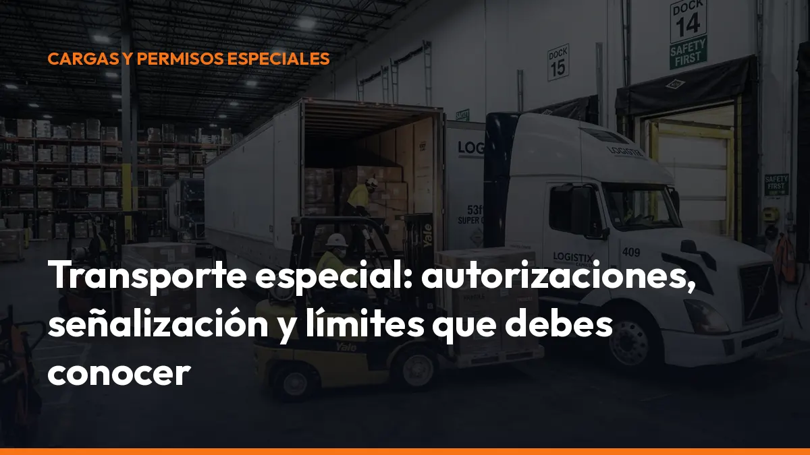

Transporte especial: autorizaciones, señalización y límites que debes conocer

La autorización debe estar concedida antes de iniciar el viaje. Además, la señalización, la velocidad, los vehículos piloto y las restricciones al tráfico para camiones pueden cambiar según la configuración del conjunto y la carretera.
En esta guía encontrarás las particularidades del transporte especial en España y los pasos esenciales para organizarlo sin errores.
¿Qué se considera transporte especial?
Se considera transporte especial aquel que necesita una autorización adicional porque el vehículo, el conjunto o la carga supera los límites reglamentarios de masa, dimensiones o presión sobre el pavimento.
La autorización complementaria de circulación, conocida como ACC, se exige cuando resulta inevitable superar esos límites por alguno de estos motivos:
- Carga indivisible: no puede dividirse en varias partes sin riesgo de daños, costes innecesarios o pérdida de utilidad.
- Vehículo especial: por su propia construcción supera las masas o dimensiones máximas.
- Servicio específico: el conjunto necesita una configuración extraordinaria para realizar correctamente su actividad.
Algunos ejemplos habituales son:
- Grandes transformadores eléctricos.
- Maquinaria de obras.
- Componentes de aerogeneradores.
- Estructuras metálicas.
- Grúas y maquinaria agrícola.
- Vehículos especiales destinados al transporte de mercancías.
La regla práctica es sencilla: si superas los límites establecidos, no salgas a carretera sin autorización. Circular sin el permiso correspondiente puede provocar una sanción, la inmovilización del vehículo y retrasos en la entrega.
Tipos de autorización para un transporte especial
El permiso se adapta al tipo de viaje, a la frecuencia y a las características del vehículo. Estas son las principales modalidades que debes conocer.
Autorización singular
La autorización singular se utiliza para un desplazamiento concreto o para una operación especialmente definida.
Incluye normalmente:
- Vehículo o conjunto autorizado.
- Descripción de la carga.
- Masas y dimensiones.
- Fecha o periodo de circulación.
- Carreteras y tramos permitidos.
- Condiciones de seguridad.
- Velocidad máxima.
- Necesidad de vehículo piloto o escolta.
Es la opción habitual cuando transportas una pieza única desde una fábrica hasta una obra, un puerto o una planta industrial.
Autorización por itinerario
La autorización por itinerario vincula el transporte a una ruta concreta o a una red de carreteras autorizada. No puedes sustituir libremente una carretera por otra si no aparece en la autorización.
El recorrido debe ser:
- Continuo, cuando la configuración exige un itinerario directo.
- Lo más directo posible, especialmente en conjuntos excepcionales.
- Viable para las dimensiones y masas autorizadas.
- Informado favorablemente por los titulares de las vías.
Antes de salir, revisa puentes, túneles, glorietas, gálibos, estrechamientos y accesos a polígonos industriales. Un itinerario aparentemente válido puede resultar imposible cuando la carga ya está montada.
Autorización de carácter periódico
Si realizas desplazamientos repetidos con una configuración similar, puedes solicitar una autorización genérica o de carácter periódico.
Esta modalidad resulta útil para:
- Empresas que mueven maquinaria con frecuencia.
- Transportes recurrentes entre los mismos centros.
- Vehículos especiales que superan permanentemente los límites.
- Configuraciones que circulan por redes ya autorizadas.
Según la información de la DGT, las ACC que solo incluyen redes pueden tener una validez de hasta 48 meses. Cuando incluyen tramos concretos, la validez general puede ser de hasta 12 meses, salvo que el informe del titular de la vía establezca un periodo inferior.
Autorización para vehículos especiales
Los vehículos especiales se agrupan, de forma general, en varias categorías:
- VERTE: vehículos en régimen de transporte especial que superan las masas o dimensiones por la carga indivisible.
- Vehículos especiales agrícolas: maquinaria y conjuntos agrícolas que superan los límites por construcción o por la carga.
- Vehículos especiales de obras y servicios: grúas, maquinaria de construcción y otros vehículos que superan los límites de forma permanente.
Si un vehículo especial transporta mercancía, debe estar destinado a ese servicio y contar con la autorización correspondiente. No basta con que tenga una ficha técnica especial.
Justifica siempre que la carga es indivisible
La indivisibilidad es uno de los puntos más importantes de cualquier solicitud.
Una carga es indivisible cuando no puede dividirse en dos o más partes sin:
- Provocar daños importantes.
- Generar un coste o riesgo innecesario.
- Impedir su utilización posterior.
- Hacer imposible el transporte dentro de los límites reglamentarios.
También puede considerarse indivisible un conjunto de elementos de la misma naturaleza y destinados al mismo fin cuando el elemento mayor supera las dimensiones reglamentarias.
¿Qué ocurre si la carga sí puede dividirse?
Si transportas mercancía divisible, como palés estándar, sacos o elementos que pueden repartirse en varios viajes, no deberías utilizar un transporte especial para superar los límites de forma injustificada.
La consecuencia práctica es clara: adapta la carga, utiliza otro vehículo o realiza más de un viaje. Presentar una carga divisible como indivisible puede provocar el rechazo de la autorización y problemas durante una inspección.
Cómo obtener los informes vinculantes de Carreteras
Cuando el itinerario afecta a carreteras cuya titularidad corresponde a la Administración General del Estado, pueden ser necesarios informes técnicos del titular de la vía. En la Red de Carreteras del Estado, la Dirección General de Carreteras analiza la viabilidad del paso.
El procedimiento habitual es el siguiente:
1. Define la configuración completa. Incluye tractor, remolques, módulos, ejes, carga, masas por eje y dimensiones totales.
2. Identifica la carga. Indica el tipo, la descripción y la denominación exacta del elemento transportado.
3. Justifica la indivisibilidad. Explica por qué no puede fraccionarse o transportarse con una configuración convencional.
4. Propón el itinerario. Detalla provincias, carreteras y tramos. Comprueba también los accesos urbanos y las vías de titularidad autonómica o local.
5. Solicita la ACC a la autoridad competente. Para muchas carreteras, el trámite se realiza mediante la aplicación TRAZA de la DGT. En País Vasco, Navarra, Cataluña o vías urbanas pueden intervenir otros organismos.
6. Espera los informes de los titulares de las vías. Pueden imponer condiciones sobre puentes, horarios, velocidad, sentido de circulación, refuerzos o medidas de seguridad.
7. Descarga la autorización electrónica. La resolución firmada electrónicamente puede descargarse e imprimirse desde TRAZA. La DGT establece un plazo máximo general de tramitación de 3 meses, descontando determinados periodos relacionados con informes o subsanaciones. Por eso debes iniciar la solicitud con tiempo suficiente.
Para solicitar una ACC, la tasa indicada actualmente por la DGT es de 132,72 €. Comprueba siempre el importe vigente antes de presentar el expediente.
Señalización obligatoria: V-20, luces y balizas
La señalización permite que el resto de usuarios identifique el transporte y anticipe sus maniobras.
Paneles V-20
Cuando la carga sobresale por detrás dentro de los límites autorizados, debe señalizarse con el panel V-20.
Ten en cuenta estas reglas:
- Colócalo en el extremo posterior de la carga.
- Debe quedar perpendicular al eje del vehículo.
- Si la carga ocupa toda la anchura posterior, pueden ser necesarios dos paneles V-20.
- De noche o con visibilidad reducida, la carga que sobresale por detrás debe llevar también luz roja.
- Si sobresale por delante, debe señalizarse con luz blanca.
- Las salientes laterales pueden exigir luces y reflectantes blancos hacia delante y rojos hacia atrás.
En un transporte especial, prevalecen además las condiciones específicas que figuren en la ACC.
Luces V-2 y alumbrado
Los vehículos especiales y los transportes especiales deben utilizar la señal luminosa V-2 en las condiciones previstas por la normativa.
Como regla general:
- La V-2 debe delimitar correctamente el contorno del conjunto.
- Debe utilizarse de día y de noche cuando se circule a una velocidad que no supere los 40 km/h.
- El vehículo debe llevar encendido el alumbrado de cruce.
- Si falla la V-2, deben utilizarse las luces de cruce junto con la señal de emergencia.
Revisa también las señales V-4, V-5, V-6, V-16 y las demás que resulten aplicables.
Vehículo piloto
Para los transportes del grupo 1, normalmente se exige vehículo piloto cuando:
- La anchura supera los 3 metros.
- La longitud supera los 20,55 metros.
- La velocidad es inferior a la mitad de la velocidad genérica de la vía.
En autopistas y autovías, el vehículo piloto se sitúa normalmente detrás, a una distancia mínima de 50 metros. En el resto de carreteras, suele situarse delante.
Si el transporte supera los 5 metros de anchura, puede ser necesario el acompañamiento de los agentes de la autoridad. En ese caso, el titular debe comunicar el viaje con un mínimo de 72 horas de antelación, según las condiciones aplicables.
El vehículo piloto debe utilizar la señal V-2 y mantener comunicación por radio o teléfono con la cabina del transporte.
Límites de velocidad del transporte especial
La velocidad depende de la categoría de la autorización:
- Autorización genérica: máximo de 70 km/h.
- Autorización específica: máximo de 60 km/h.
- Autorización excepcional: la velocidad fijada en la autorización, nunca superior a 60 km/h.
Siempre prevalece el límite más restrictivo de la tarjeta ITV, de la autorización o de la señalización de la vía.
Además, si las condiciones meteorológicas reducen la visibilidad por debajo de 150 metros hacia delante o hacia atrás, debes suspender la circulación y abandonar la plataforma cuando sea posible.
Restricciones horarias y restricciones al tráfico para camiones
La DGT publica cada año medidas especiales de regulación del tráfico. Pueden afectar a:
- Vehículos de mercancías de más de 7.500 kg de MMA o de conjunto.
- Vehículos que transportan mercancías peligrosas.
- Vehículos especiales.
- Transportes que necesitan una ACC.
Las restricciones pueden aplicarse en festivos, fines de semana, operaciones de tráfico, puertos, túneles o tramos con alta intensidad circulatoria.
Si existe una necesidad ineludible, puedes solicitar una autorización especial para circular durante el periodo restringido. Deberás indicar:
- Matrícula y características del vehículo.
- Descripción de la carga.
- Motivo que justifica la urgencia.
- Fechas de inicio y final, con un máximo general de un mes.
- Carreteras y tramos afectados.
- Número de la ACC, si procede.
La tasa indicada por la DGT para este trámite es de 10,51 €. No confundas esta autorización con la ACC: son trámites diferentes.
Checklist antes de iniciar el viaje
Antes de salir, confirma estos puntos:
- Permiso vigente: lleva la ACC y comprueba que coincide con el conjunto utilizado.
- Carga autorizada: verifica masas, dimensiones, centro de gravedad y estiba.
- Itinerario: revisa todos los tramos, obras, gálibos y restricciones.
- Comunicación previa: realiza el aviso de inicio de viaje cuando sea obligatorio.
- Señalización: comprueba V-20, V-2, luces, reflectantes y paneles.
- Vehículo piloto: confirma posición, distancia y comunicación con la cabina.
- Horario: revisa restricciones nacionales, autonómicas y locales.
- Documentación: guarda la autorización también en formato digital para consultarla desde el móvil.
En Mi Carga te ayudamos a trabajar con la documentación del transporte de forma más ordenada y accesible. Centraliza tus documentos, reduce búsquedas durante la ruta y ten la información disponible cuando llegue un control.
Solicita información sobre Mi Carga o empieza tu suscripción.
Preguntas frecuentes sobre transporte especial
¿Puedo circular sin ACC si la carga solo sobresale un poco?
No siempre. Si superas las dimensiones reglamentarias, necesitas la autorización que corresponda. La señal V-20 no sustituye al permiso.
¿Quién concede el permiso de transporte especial?
Depende del territorio y del itinerario. Puede intervenir la DGT, una comunidad autónoma, el Servei Català de Trànsit, el Gobierno Vasco, Navarra o el ayuntamiento correspondiente.
¿La autorización permite cambiar el itinerario?
No de forma libre. Debes circular por las carreteras, redes y condiciones que aparecen en la autorización. Si necesitas modificar el recorrido, solicita la modificación o una nueva autorización antes de iniciar el viaje.
¿Cuándo necesito vehículo piloto?
Depende de la anchura, la longitud, la velocidad y las condiciones de la ACC. Como referencia para VERTE, puede ser obligatorio cuando superas 3 metros de anchura, 20,55 metros de longitud o determinados límites de velocidad.
Organiza el transporte especial con tiempo. Solicita el permiso, revisa el itinerario y prepara toda la documentación antes de salir.
Fuentes oficiales consultadas
- DGT: Autorizaciones especiales de circulación
- DGT: Autorizaciones complementarias de circulación (ACC)
- DGT: Circulación en fechas e itinerarios restringidos
- BOE: Reglamento General de Circulación
- Mi Carga
Genera tus 10 primeros documentos gratis con Mi Carga
DeCA, carta de porte y ADR, en PDF, con QR y archivo automático en la nube.
Empezar con 10 documentos gratisArtículo informativo. Consulta siempre el caso concreto de tu operación. ¿Dudas? Escríbenos.